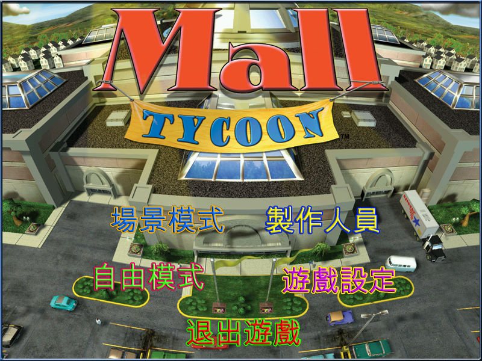
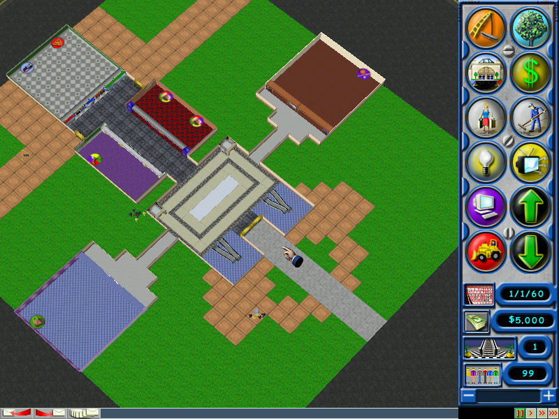

名稱：商場大亨1／商業街大亨1／摩登百貨王 (Mall Tycoon，中文／英文版)
簡介：Holistic 2002年出品的商場建置營運管理模擬遊戲，由Take 2代理發行，台灣由英寶
格中文化並代理發行 [待補]。


保護：光碟
備註：繁中版其實只有主畫面有中文，實際遊戲內容仍為英文。
備註：VirtualBox+WineD3D雖可執行，但仍有貼圖問題，虛擬機建議使用VMware+DxWnd（掛
載mall.exe，可使用全螢幕模式）。